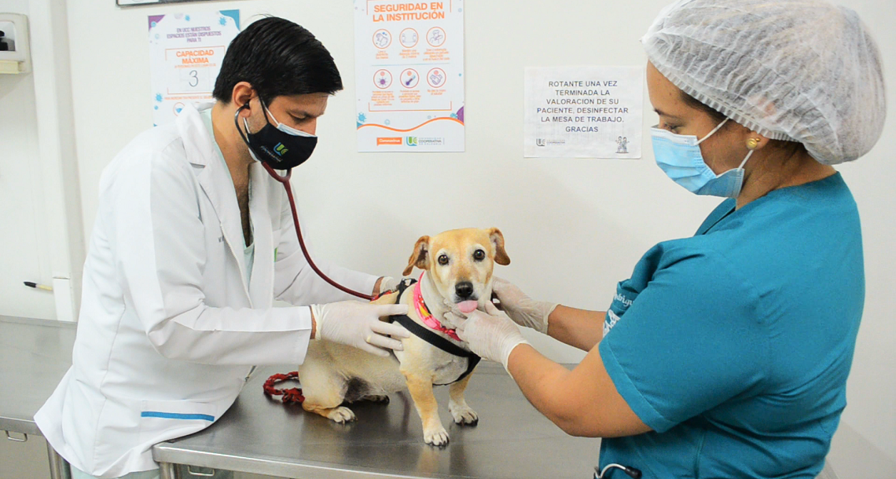
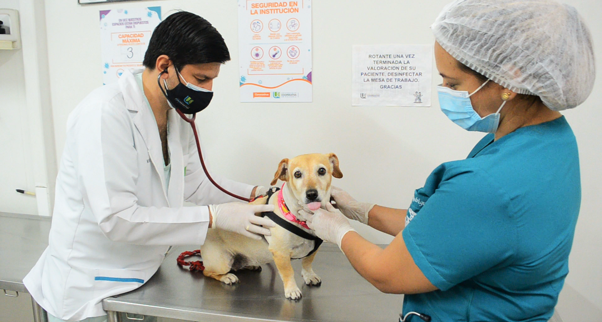

Redes Sociales
 

Actividades para Animales
Ideas de Como Cuidar a tus Cachorros
Cuidar a los cachorros requiere atención, amor y paciencia. Aquí tienes algunas ideas clave para cuidar a tus cachorros de manera efectiva:
1. Nutrición adecuada
Alimentación específica para cachorros: Asegúrate de que su dieta sea adecuada para su etapa de crecimiento. Compra alimento balanceado de calidad diseñado para cachorros, que contiene los nutrientes necesarios para su desarrollo.
Leche materna o fórmula: Si el cachorro es muy joven (menos de 8 semanas) y está separado de su madre, necesitará una fórmula especial para cachorros en lugar de leche de vaca, que puede causarles problemas digestivos.
Agua fresca: Mantén siempre agua limpia y fresca disponible.
2. Atención veterinaria
Visitas regulares al veterinario: Lleva a los cachorros al veterinario para revisar su salud general. Las primeras vacunas y desparasitaciones son cruciales.
Vacunas: Sigue el calendario de vacunación recomendado para prevenir enfermedades comunes como el parvovirus y la rabia.
Desparasitación: Los cachorros suelen tener parásitos intestinales. El veterinario te indicará el tratamiento adecuado.
3. Socialización temprana
Interacción con personas y otros animales: Ayuda a que tus cachorros se acostumbren a nuevas personas, animales y ambientes. La socialización a temprana edad reduce el riesgo de problemas de comportamiento en el futuro.
Juego controlado: Jugar con ellos es importante para su desarrollo físico y mental. Utiliza juguetes suaves y adecuados para su tamaño.
4. Entrenamiento temprano
Entrenamiento de baño: Comienza a enseñarles dónde hacer sus necesidades con paciencia y refuerzos positivos. Los premios y el elogio son más efectivos que el castigo.
Obediencia básica: A partir de los 8 a 10 semanas, puedes comenzar a enseñar comandos básicos como "sentado", "quieto" y "ven".
5. Espacio seguro y cómodo
Cama y espacio propio: Proporciónales un espacio donde se sientan seguros, como una cama o manta acogedora en un lugar tranquilo de la casa.
Evita peligros: Cachorros son curiosos y explorarán todo. Mantén fuera de su alcance objetos peligrosos como productos de limpieza, cables, plantas tóxicas y pequeñas piezas que puedan tragar.
6. Ejercicio adecuado
Corto y adecuado a su edad: Los cachorros no deben hacer ejercicio en exceso ya que sus huesos y articulaciones aún se están desarrollando. Juega con ellos por períodos cortos, ajustando la intensidad a su energía.
Juguetes interactivos: Ofrece juguetes que estimulen su mente, como pelotas o juegos de búsqueda.
7. Higiene y cuidado personal
Baños suaves: Los cachorros no necesitan baños muy frecuentes, pero cuando lo hagas, utiliza champús especiales para perros.
Cepillado regular: Cepillarles el pelaje ayuda a mantenerlo limpio y a reducir la caída de pelo. Además, esto es una buena oportunidad para revisar su piel en busca de parásitos.
Corte de uñas: Mantén sus uñas cortas para evitar que se rompan o que se lastimen.
8. Mucho amor y atención
Afecto: Los cachorros necesitan sentir seguridad y amor. Pasar tiempo con ellos, abrazarlos y acariciarlos fomenta el vínculo entre tú y tu mascota.
Rutina estable: Los cachorros prosperan con una rutina, lo que incluye horarios regulares de comida, baño y juegos. Esto les da una sensación de seguridad y predictibilidad.
© todos los derechos reservados
no maltrato animal.